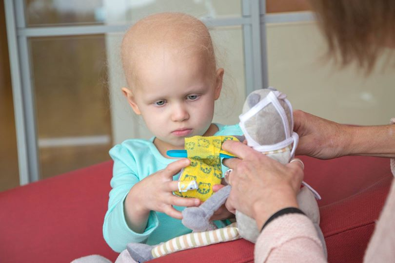
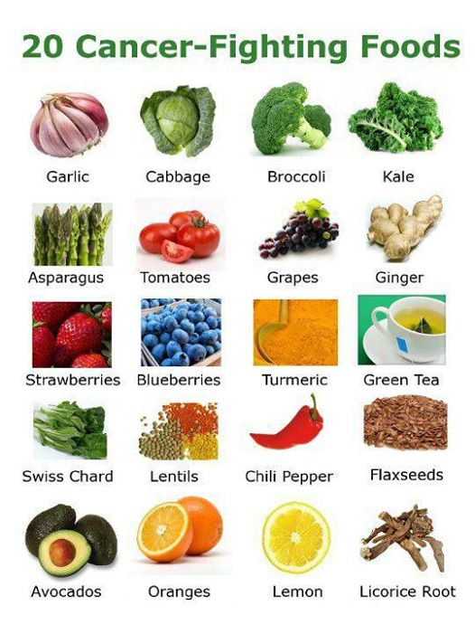

الوقاية من السرطان
مرض السرطان (cancer): هو مصطلح طبّيّ يشمل مجموعة كبيرة من الأمراض التي تغزو جسم الإنسان....
أقرأ المزيد ..أعراض السرطان
عند الحديث عن أعراض السرطان، فإن تشخيص المرض باكراً هو أمر حاسم. جمعنا لكم هنا بعض علامات السرطان لدى النساء!....
أقرأ المزيد ..

ما هو ورم الدماغ؟
ورم الدماغ هو نمو شاذ للخلايا في الدماغ. ولا تعتبر كل أنواع أورام الدماغ سرطان، حيث أن هذه الأورام قد تكون حميدة أو خبيثة. فالأورام الحميدة لا تحتوي على خلايا سرطانية....
أقرأ المزيد ..

هل علاج السرطان بالغذاء حقيقة أم كذب؟
في البداية لابد وأن نعلم أن الغذاء يلعب دورا مهما للغاية في خفض مخاطر الإصابة بمرض السرطان الخبيث. ....
أقرأ المزيد ..